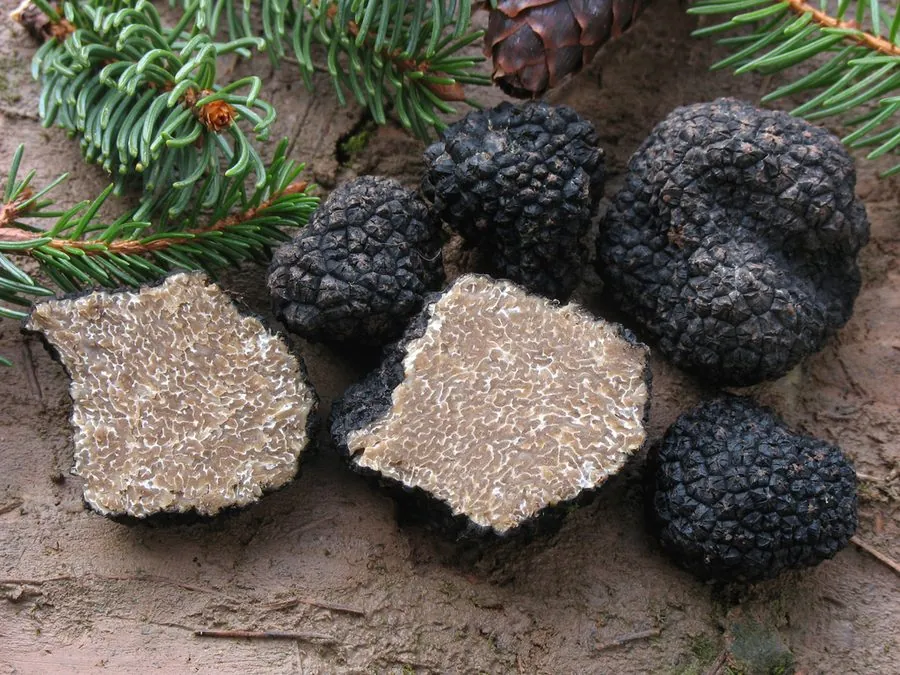

真菌 · 真菌界
夏块菌 Tuber aestivum

夏块菌是欧洲常见的黑色块菌，子实体生于地下，表面布满黑色疣突，内部有白色大理石状纹理，香气较淡，是珍贵的食用菌。
- 分类
- 门子囊菌门纲盘菌纲目盘菌目科块菌科属块菌属
- 栖息环境
- 石灰质土壤的地下 5–20 cm，与栎、榛、山毛榉等树木形成菌根
- 地理分布
- 欧洲地中海沿岸至中欧，中国西南有近缘种分布
- 保护级别
- 暂无评估（IUCN 未评估，欧洲部分产地受采集管理）
物种志
夏块菌是子囊菌门块菌科的地下真菌，子实体近球形或不规则块状，直径 3–10 cm，表面黑色至黑褐色，密布多边形的疣状突起，疣突顶端常呈褐色；内部（产孢组织）呈淡黄褐色至灰褐色，其间分布着大量白色的分枝状纹理，形成大理石般的花纹。子囊孢子椭圆形，表面有网纹。
夏块菌生于地下 5–20 cm 的土层中，与栎树、榛树、山毛榉等树木的根系形成外生菌根，靠菌丝网从树木获取糖分。它主要分布于欧洲的石灰质土壤地区，夏秋季成熟，传统上由经过训练的狗或母猪凭气味寻找。夏块菌香气清淡，不如黑孢块菌浓郁，但仍可切片生食、做酱或与蛋类同烹；采集时要用专用的块菌耙，采后回填土坑，以保护菌丝体和来年的产量。
形态与习性
- 子实体近球形，直径 3–10 cm
- 表面黑色，密布多边形疣突
- 内部淡黄褐色，具白色大理石状纹理
- 共生与栎、榛、山毛榉形成外生菌根
- 采收期夏秋季，需训练犬只搜寻
- 食用性可食，香气较黑孢块菌清淡
- 生境石灰质土壤地下 5–20 cm
趣味知识
- 夏块菌长在地下，靠散发气味吸引动物挖掘取食来传播孢子。
- 采块菌的人常训练狗凭气味定位，母猪也常被用来寻找。
- 切开后内部白色纹理像大理石花纹，是块菌的典型特征。
- 夏块菌香气较淡，价格远低于冬季的黑孢块菌。